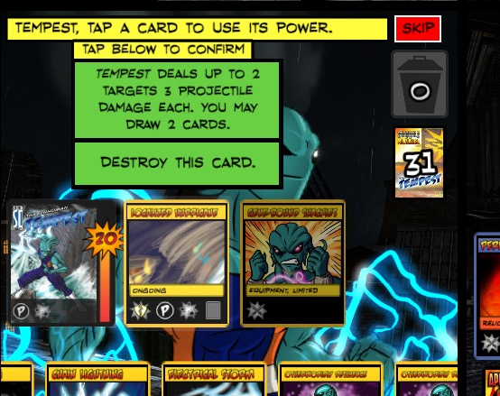

I wanted to bring this attention to the video game people in case they weren't aware of this bug, and also wanted to see if anyone else was getting this.
Like many others I too have had issue with the chat window being off screen (and restoring via iPad doesn't seem to help). however, Another bug I noticed as of yesterday is certain cards with multiple power options - Localized Hurricane and Infection - onky give you the option to select the bottommost power. Screenshot? Screenshot.
https://drive.google.com/file/d/0B5rgvwYYvTwfWjVRUVlmRl9ZeGlNRjI0YlRhQU9vWWtYZWRR/view?usp=sharing
Note that I do not have the option to use the topmost power to deal three damage. However, if you light tap the card you can still get the option, as seen below.
https://drive.google.com/file/d/0B5rgvwYYvTwfUUE0QzVEUGgxZ2FTWlZGQllnemRhb0tJM19z/view?usp=sharing
A similar bug bug exists for Infection when plague rat is flipped since this gives hero cards multiple powers. I screwed up cropping this screenshot but you can see the green boxes that do give infected Haka multiple power options but not the red punch! icons that would say Use First Power and Use Second Power.
https://drive.google.com/file/d/0B5rgvwYYvTwfUUE0QzVEUGgxZ2FTWlZGQllnemRhb0tJM19z/view?usp=sharing
